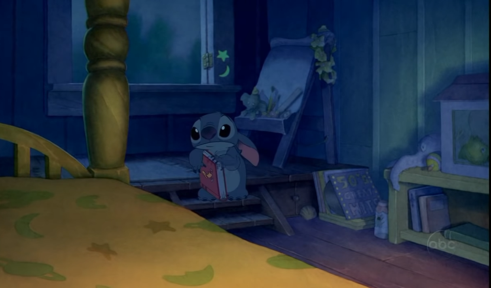
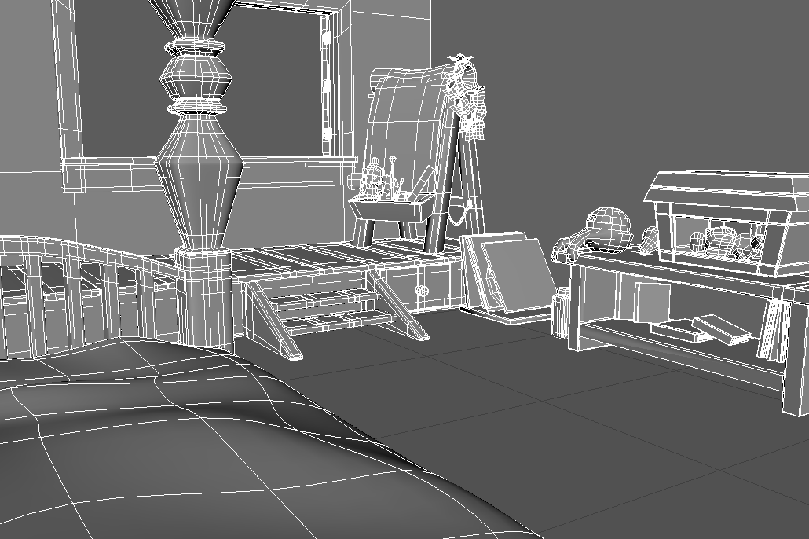
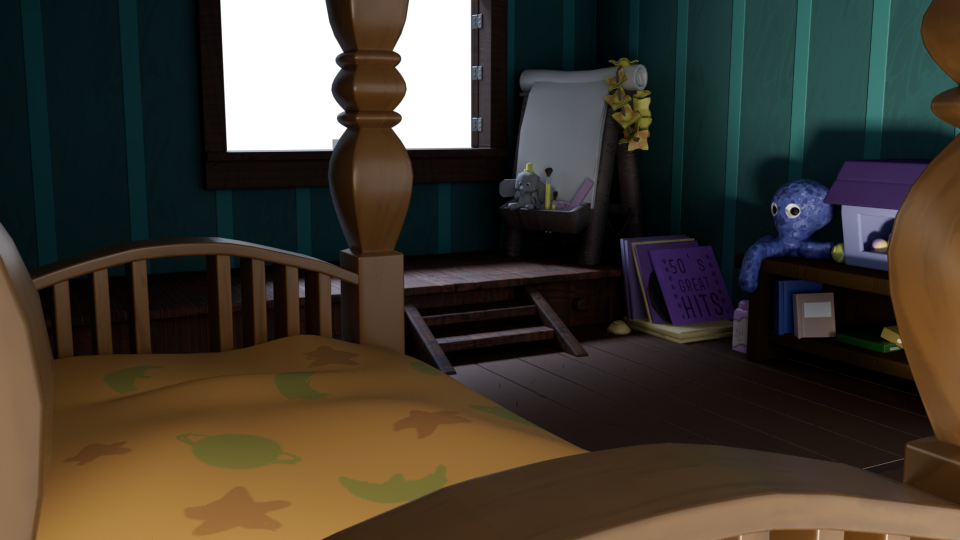
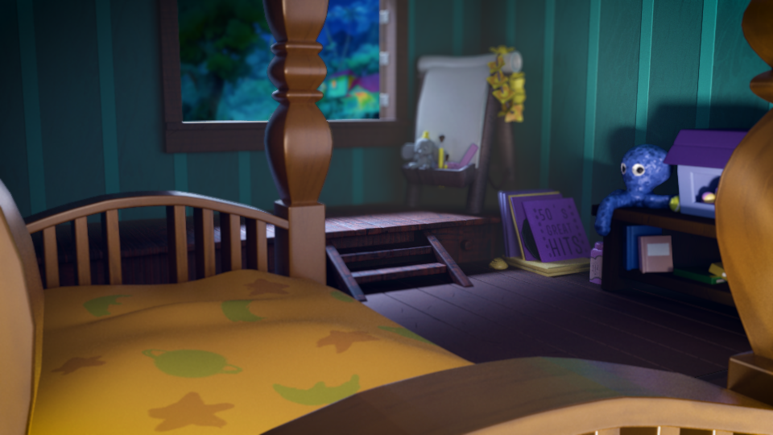

Render & Pós-Produção · Maya · V-Ray · Substance Painter
Pipeline do projeto

01
Estudo da cena original de Lilo & Stitch para levantar proporções, paleta de cor, iluminação e composição. A análise das referências define o tom e a fidelidade estética do projeto final.

02
Construção dos objetos e cenário em Maya, respeitando as proporções definidas na etapa de referência. Foco em geometria limpa, topologia adequada e escala correta entre os elementos.

03
Aplicação de materiais e texturas com Substance Painter — mapas de cor, roughness, normal e especular. Resultado integrado ao Maya para feedback em tempo real antes do render final.

04
Render final em V-Ray com ajustes de iluminação, GI e câmera. Pós-produção no Photoshop — grading de cor, profundidade de campo, ajuste de contraste e composição final para replicar o mood do filme.